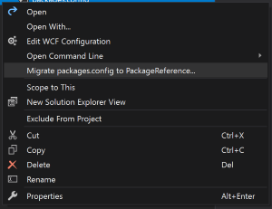

In my last post about Using Prism with Xamarin.Forms & GTK# I showed how to force the use of .NET Standard reference when using NuGet with packages.config. You may prefer using the <PackageReference> tag in your csproj and found that those changes do not work for your scenario. This post will show you how to achieve the same override with PackageReference based projects.
Using Package Reference
 If you already have packages installed and are using a packages.config file then you will need to convert your project to use PackageReference. You can follow the steps here: Migrate from packages.config to PackageReference. The short version is to right-click on packages.config and select Migrate Packages.config to PackageReference....
If you just started a new project and do not have any NuGet packages yet then you can switch to using PackageReference in your Visual Studio settings by going to Tools -> Options -> NuGet Package Manager -> General and set Default package management format to PackageReference. Then add your packages as usual.
Forcing the Specific DLL you want
In order to override the use of Target Platform to add references to the versions we want we need to do two things:
- Tell the project to ignore libs from the
PackageReference - Tell the project to use our specific references
Exclude Libraries From PackageReference
If your reference is inherited because of a higher level reference (i.e. Prism.Core comes from referencing another package, like Prism.DryIoc.Forms or Prism.Unity.Forms) we need to explicitly reference the package first, then we can update the reference to ignore the libs. After the package is referenced unload your project (right-click the project and select Unload Project), then right-click the unloaded project node and select edit (ProjectName).csproj.
Find the <PackageReference> tag for your package in the csproj. It will look something like this:
<ItemGroup>
<PackageReference Include="Prism.Core">
<Version>7.1.0.431</Version>
</PackageReference>
</ItemGroup>
We need to make a tweak and tell NuGet to ignore the lib assets by adding the ExcludeAssets attribute with the value Compile:
<ItemGroup>
<PackageReference Include="Prism.Core" ExcludeAssets="Compile">
<Version>7.1.0.431</Version>
</PackageReference>
</ItemGroup>
More info on the PackageReference node can be found here: Package references (PackageReference) in project files.
Add Reference to Desired Target Framework Assembly
Now when you build you will not get any <Reference> nodes auto added for this package. So that means we need to tell the project about the reference, but where are those NuGet packages kept when using package references (there is no packages folder with our solution)? How do we get to that path? MSBuild provides a variable we can use, NuGetPackageRoot. If you are trying to find this folder on your machine it is usually located at c:\users\[username]\.nuget\packages. Add the following block to your csproj (after the PackageReference we just updated):
<ItemGroup>
<Reference Include="Prism">
<HintPath>$(NuGetPackageRoot)prism.core\7.1.0.431\lib\netstandard2.0\Prism.dll</HintPath>
</Reference>
</ItemGroup>
Now when you build and run your project it will ignore the binaries in the NuGet’s lib folder and only add the references you specified.
Caveat
You will need to track version number changes and update the <Reference> node when you update to a new version.
Update - A better way!
Check out this article with an cleaner modification to the csproj that is more resilient to version updates.
comments powered by Disqus